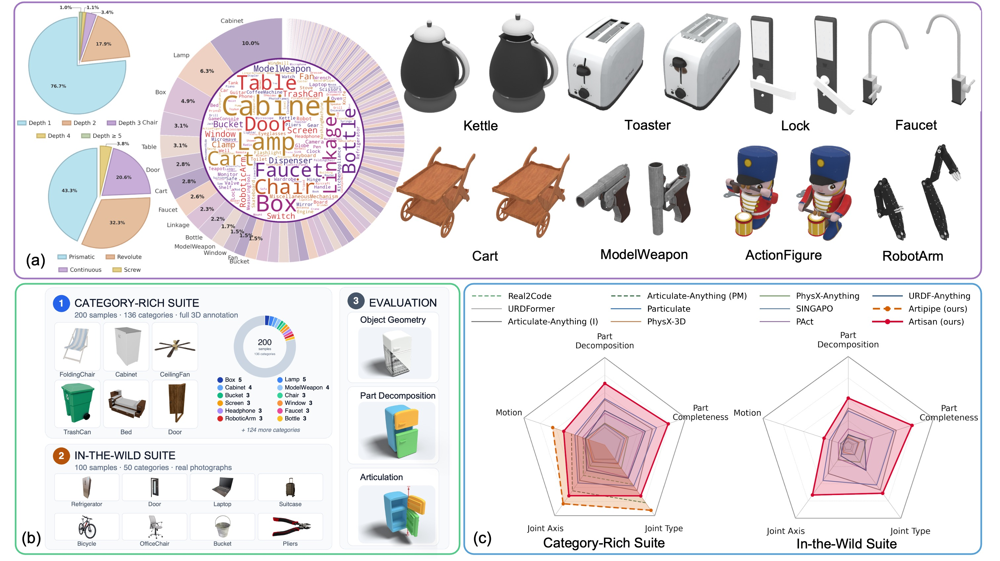
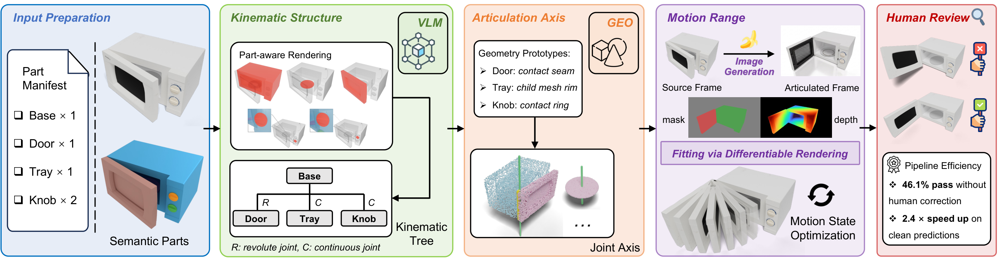
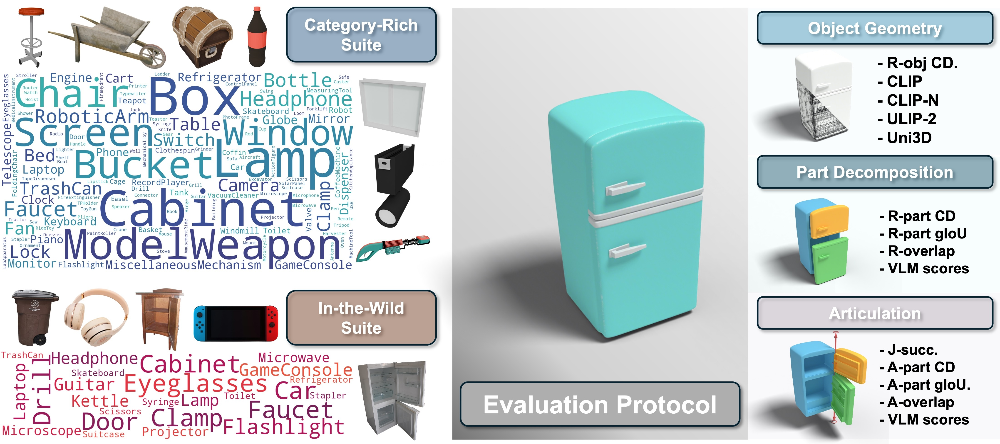
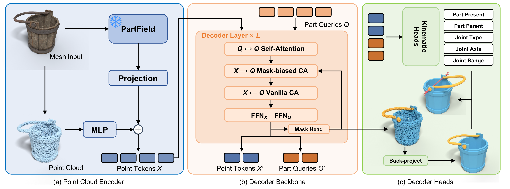
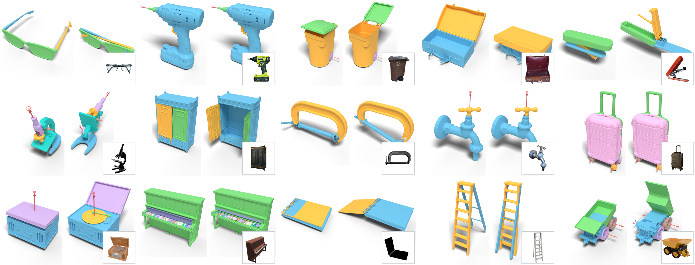
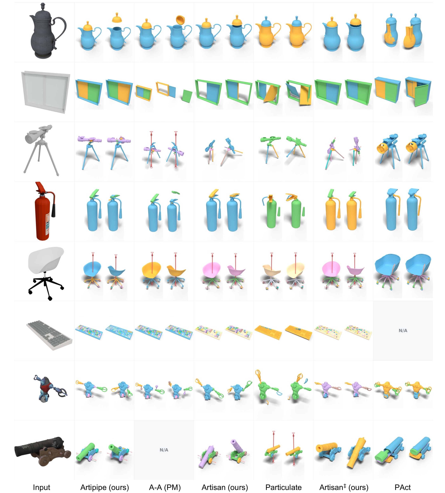
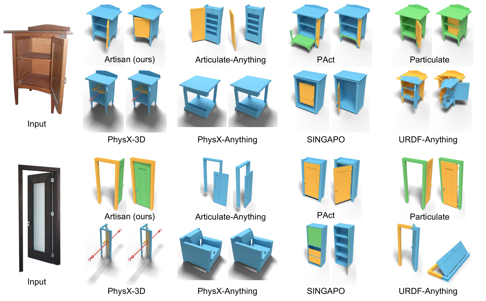

ArtiAtlas: A Holistic Ecosystem for
Diverse 3D Articulation Modeling

The creation of interactable, articulated 3D assets is a cornerstone of modern computer graphics and physical simulation. Progress in articulation modeling is currently bottlenecked by limited data scale, inconsistent evaluation protocols, and representational fragility under long-tail kinematic chains. We present three complementary contributions to address these gaps: ArtiAtlas is a large-scale dataset of 14,556 annotated articulated objects across 173 categories, constructed via a scalable human-machine pipeline for semantic-part consolidation and kinematic annotation. ArtiBench is a unified evaluation suite pairing an in-distribution split of ArtiAtlas with an image-conditioned in-the-wild set, and introducing calibrated VLM-based metrics that align closely with human preference where ground-truth 3D annotation is unavailable. Artisan is a part-aware articulation model with a set-prediction query interface, mask-aware bidirectional decoding, and geometry-anchored axis supervision, trained end-to-end to predict variable-cardinality link sets directly from raw meshes. Under a strict per-joint success criterion, all evaluated baselines achieve below 10% on ArtiAtlas; Artisan raises this to 30% and clearly leads on the in-the-wild VLM scores, yet no method—ours included—is close to reliable fine-grained kinematic prediction. We release the 10,005-object public subset of ArtiAtlas, ArtiBench, and Artisan as a shared foundation for future work on realistic articulation understanding and generation.
ArtiAtlas & ArtiPipe
Covering 173 categories, 4 joint types, and kinematic chains up to depth 10—annotated with ArtiPipe.
Drill Press
9 Links · 8 JointsQuadruped Robot w/ Arm
13 Links · 12 JointsBench Vise
4 Links · 3 Joints3D Printer
5 Links · 4 JointsVentilation Fan
6 Links · 5 JointsMoka Espresso Pot
3 Links · 2 JointsFolding Screen
4 Links · 3 JointsTerrestrial Globe
3 Links · 2 JointsMicrowave Oven
2 Links · 1 JointSwivel-Handle Bucket
2 Links · 1 Joint
ArtiBench
A unified benchmark across the Category-Rich Suite (200 objects across 136 categories with 3D ground truth) and the In-the-Wild Suite (100 real-world photographs across 50 categories), evaluating Object Geometry, Part Decomposition, and Articulation.

Artisan
Given a single static 3D mesh, Artisan jointly predicts part segmentation masks, kinematic tree topology, joint types, canonical joint axes, and motion limits in a single feed-forward pass.


Generalization across 15 diverse categories: eyeglasses, power drill, wheeled trash can, briefcase, stapler, microscope, wardrobe, C-clamp, faucet, suitcase, record player, upright piano, spiral notebook, step ladder, and dump truck.

Qualitative comparison on the Category-Rich Suite. Both ArtiPipe and Artisan produce cleaner part boundaries and more accurate joint axes than existing baselines across diverse non-furniture categories.

Qualitative comparison on the In-the-Wild Suite. Compared against 7 baseline methods on real-world photographs, Artisan decomposes movable parts cleanly and predicts physically plausible hinge axes.
BibTeX
@inproceedings{lu2026artiatlas,
title = {ArtiAtlas: A Holistic Ecosystem for Diverse 3D Articulation Modeling},
author = {Lu, Junzhe and Lin, Jing and Cao, Ziang and Wang, Haoqian and Liu, Ziwei and Zhang, Jianfeng},
booktitle = {SIGGRAPH Asia 2026 Conference Papers (SA Conference Papers '26)},
year = {2026},
doi = {10.1145/3829340.3842377}
}